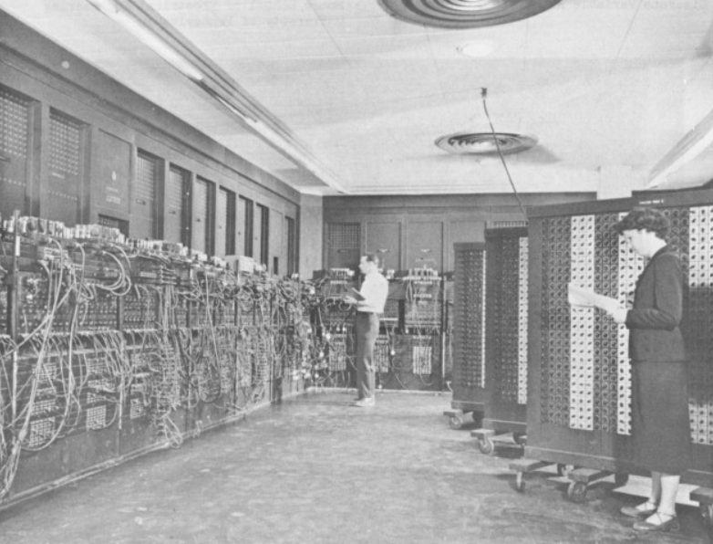
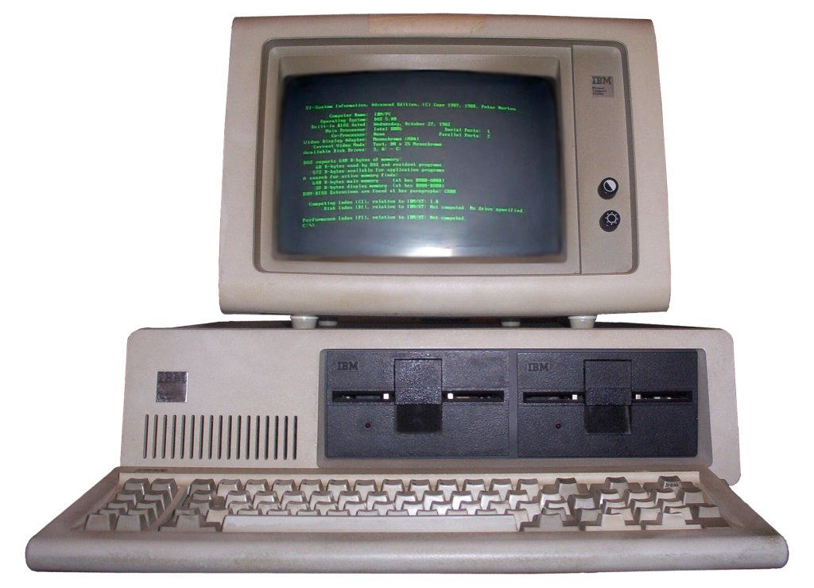

The Mobile Revolution (2010s)
The introduction of smartphones and tablets revolutionized the way people access information and communicate, making technology truly personal and portable.

Join us on an interactive journey through the eras of technological advancements. As you scroll, you'll transition through different eras of technology, each represented with a unique design and story. Let's start the journey!
This era marked the invention of the first programmable computers like the ENIAC and the UNIVAC. These machines were large, room-sized devices used primarily for military and scientific calculations.
This era saw the advent of personal computers, making computing accessible to the masses. Companies like Apple and IBM played significant roles.
The invention of the World Wide Web by Tim Berners-Lee opened up a new world of information accessibility and global communication.
The introduction of smartphones and tablets revolutionized the way people access information and communicate, making technology truly personal and portable.
This current era is seeing the rise of artificial intelligence and machine learning, with technologies like voice assistants, facial recognition, and autonomous vehicles becoming more commonplace.

This era is speculative and could focus on potential future technologies like quantum computing, advanced AI, or space travel.
We've traveled through time, exploring the evolution of technology and its impact on our lives. From the birth of computing to the potential future of technology, it's clear that our world has been profoundly shaped by these advancements. As we look to the future, one can only imagine what new innovations await us. Thank you for joining us on this journey!
The Rise of Social Media (2000s)
This era saw the rise of social media platforms like Facebook, Twitter, and Instagram, changing the way people communicate and share information.